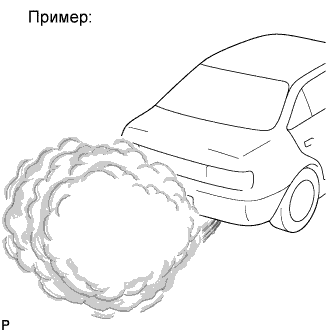
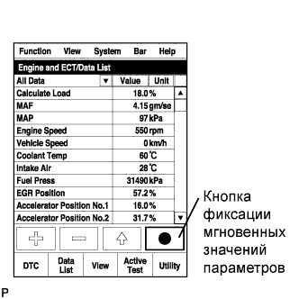

СИСТЕМА ECD (для моделей без DPF) > Испускается белый дым |
| Неисправности устройств топливной системы Common Rail дизельного двигателя и их признаки |
Система управления двигателем
| Основная неисправность | Турбонагнетатель (уплотнительное кольцо со стороны компрессора, уплотнительное кольцо со стороны турбины, вал, слив масла) | |
| Признаки | Белый дым Чрезмерный расход масла | |
| Основная неисправность | Обрыв цепи, неисправность реле свечей накаливания | |
| Признаки | Затрудненный запуск, неравномерный холостой ход, детонация, белый дым (в холодную погоду) | |
| Параметры из Data List | Проверьте контрольную лампу свечи накаливания | |
| Способ диагностики | Измерьте сопротивление свечи накаливания | |
| Основная неисправность | Потеря компрессии | |
| Признаки | Неравномерный холостой ход (постоянный недостаток мощности) | |
| Параметры из Data List | Engine Speed of Cyl #1 – #4
| |
Система впрыска дизельного двигателя
| Основная неисправность | Засорение | |
| Признаки | Неравномерный холостой ход, недостаточная мощность, черный дым, белый дым, детонация | |
| Параметры из Data List | Injection Feedback Val #1-#4
| |
| Основная неисправность | Неисправность цепи: форсунка в сборе не открывается. | |
| Признаки | Затрудненный запуск, неравномерный холостой ход, недостаток мощности, черный дым, белый дым, детонация | |
| Параметры из Data List | То же, что для форсунки в сборе | |
| Диагностический код неисправности DTC | Когда электронный блок привода форсунок неисправен, могут сохраняться некоторые DTC. | |
| Основная неисправность | - | |
| Признаки | Затрудненный запуск, неравномерный холостой ход (особенно в холодную погоду) | |
Система рециркуляции отработавших газов дизельного двигателя
| Основная неисправность |
|
| Признаки |
|
| Параметры из Data List | Actual EGR Valve Pos., Target EGR Position
|
| Пояснение признака |
| Белый дым | Когда в двигателе имеют место пропуски зажигания, все топливо, которое было впрыснуто, но осталось несгоревшим, выходит в виде белого дыма. |
| Внутренняя утечка масла в турбонагнетателе (Нажмите здесь) Если утечка масла происходит через уплотнение со стороны турбины, из выпускной трубы будет выходить большое количество белого дыма. Внутренняя утечка масла не заметна снаружи турбонагнетателя. |
| 1.ОПРЕДЕЛИТЕ УСЛОВИЯ, ПРИ КОТОРЫХ КЛИЕНТ НАБЛЮДАЛ БЕЛЫЙ ДЫМ |
Выясните у клиента, при каких условиях выпускался белый дым.
- При каких дорожных условиях появился белый дым?
- Белый дым появляется постоянно или лишь иногда?
- Белый дым появляется, только когда автомобиль непрогрет, или при любом состоянии автомобиля?
- Белый дым выпускается только после запуска автомобиля или сохраняется в режиме холостого хода?
Определите признаки неисправности, чтобы сузить круг возможных причин.
| ДАЛЕЕ | |
| 2.СЧИТАЙТЕ КОДЫ DTC (ОТНОСЯЩИЕСЯ К ДВИГАТЕЛЮ) |
Подсоедините портативный диагностический прибор к DLC3.
Включите зажигание (IG) и портативный диагностический прибор.
Войдите в следующие меню: Powertrain / Engine and ECT / DTC.
Считайте коды DTC, ожидающие обработки.
| Результат | Следующий шаг |
| Коды DTC не выводятся | А |
| Выводятся коды DTC, относящиеся к двигателю | B |
|
| ||||
| А | |
| 3.ПРОВЕРЬТЕ, КОГДА ВЫПУСКАЕТСЯ БЕЛЫЙ ДЫМ |
|  |
Запустите двигатель.
До упора нажмите педаль акселератора, а затем отпустите ее.
Проверьте, появляется ли белый дым при разгоне двигателя.
| Результат | Следующий шаг |
| Белый дым выпускается только непосредственно после запуска двигателя | А |
| Белый дым есть всегда и выпускается непрерывно | B |
В выпускной трубе и т.д. имеется масло.
| C |
|
| ||||
|
| ||||
| А | |
| 4.ПРОВЕРЬТЕ ТЕМПЕРАТУРУ, ПРИ КОТОРОЙ ВЫПУСКАЕТСЯ БЕЛЫЙ ДЫМ |
Проверьте, выпускается ли белый дым только при температуре охлаждающей жидкости двигателя ниже 0°C (32°F).
| Результат | Следующий шаг |
| Белый дым выпускается при температуре ниже 0°C (32°F) | А |
| Белый дым выпускается независимо от температуры | B |
|
| ||||
| А | |
| 5.ПРОВЕРЬТЕ РЕЛЕ ВКЛЮЧЕНИЯ СВЕЧЕЙ НАКАЛИВАНИЯ (GLOW) |
Проверьте реле включения свечей накаливания (GLOW) (Нажмите здесь).
|
| ||||
| OK | |
| 6.ПРОВЕРЬТЕ СВЕЧУ НАКАЛИВАНИЯ В СБОРЕ (СОПРОТИВЛЕНИЕ) |
Проверьте свечу накаливания (Нажмите здесь).
|
| ||||
| OK | |
| 7.СНИМИТЕ ПОКАЗАНИЯ ПОРТАТИВНОГО ДИАГНОСТИЧЕСКОГО ПРИБОРА |
Подсоедините портативный диагностический прибор к DLC3.
Включите зажигание (IG) и портативный диагностический прибор.
Запустите двигатель
Войдите в следующие меню: Powertrain / Engine and ECT / Data List / Fuel Press, Target Common Rail Pressure.
|  |
С помощью портативного диагностического прибора зафиксируйте значения параметров.
Измерьте разность между заданным давлением в топливной системе (Target Common Rail Pressure) и фактическим давлением в топливной системе (Fuel Press) при разгоне двигателя с полностью нажатой педалью акселератора.
| Результат | Следующий шаг |
| Значение давления топлива находится в пределах интервала "Target Common Rail Pressure" +/- 5000 кПа. | А |
| За исключением указанного выше | B |
|
| ||||
| А | |
| 8.ПРОВЕРЬТЕ КОМПЕНСАЦИОННЫЙ КОД ФОРСУНКИ |
Считайте компенсационные коды форсунок (Нажмите здесь).
|
| ||||
| OK | |
| 9.СНИМИТЕ ПОКАЗАНИЯ ПОРТАТИВНОГО ДИАГНОСТИЧЕСКОГО ПРИБОРА (ЗНАЧЕНИЕ ОБРАТНОЙ СВЯЗИ О ВПРЫСКЕ #1 – #4, ОБЪЕМ ВПРЫСКА ТОПЛИВА) |
Проверьте значения Injection Feedback Val #1 – #4 и Injection Volume в наборе мгновенных значений параметров, зафиксированных после прогрева двигателя и работы на холостом ходу в течение 1 мин с выключенной системой кондиционирования.
| Результат | Следующий шаг |
| Значения Injection Feedback Val #1 – #4 не превышают 3 мм3/ход, а значение Injection Volume находится в диапазоне 4,5-10 мм3/ход | А |
| Любое другое состояние | B |
|
| ||||
| B | |
| 10.ВЫПОЛНИТЕ ДИАГНОСТИКУ В РЕЖИМЕ ACTIVE TEST С ПОМОЩЬЮ ПОРТАТИВНОГО ДИАГНОСТИЧЕСКОГО ПРИБОРА (УПРАВЛЕНИЕ ПРЕКРАЩЕНИЕМ ПОДАЧИ ТОПЛИВА В ЦИЛИНДРЫ #1 – #4) |
Подсоедините портативный диагностический прибор к DLC3.
Запустите двигатель и включите портативный диагностический прибор.
Войдите в следующие меню: Powertrain / Engine and ECT / Active Test / Control the Cylinder #1 to #4 Fuel Cut.
| ДАЛЕЕ | |
| 11.ВЫПОЛНИТЕ АКТИВНУЮ ДИАГНОСТИКУ С ПОМОЩЬЮ ПОРТАТИВНОГО ДИАГНОСТИЧЕСКОГО ПРИБОРА (CHECK THE CYLINDER COMPRESSION) |
Подсоедините портативный диагностический прибор к DLC3.
Включите зажигание (IG) и портативный диагностический прибор.
Войдите в следующие меню: Powertrain / Engine and ECT / Active Test / Check the Cylinder Compression / Data List / Compression / Engine Speed of Cyl #1 – #4.
Запустите прокручивание коленчатого вала двигателя стартером.
Проверьте частоту вращения коленчатого вала двигателя в режиме Active Test.
| Результат | Следующий шаг |
| Значения параметров Engine Speed Cyl #1 – #4 не отличаются друг от друга более чем на 10 об/мин | A |
| Любое другое состояние | B |
|
| ||||
| B | |
| 12.ПРОВЕРЬТЕ ДАВЛЕНИЕ СЖАТИЯ В НЕИСПРАВНОМ ЦИЛИНДРЕ |
Проверьте давление сжатия в цилиндре (Нажмите здесь).
|
| ||||
| OK | |
| 13.ЗАМЕНИТЕ НЕИСПРАВНУЮ ФОРСУНКУ ЦИЛИНДРА |
Замените форсунку неисправного цилиндра в сборе (Нажмите здесь).
| ДАЛЕЕ | |
| 14.УДАЛИТЕ ВОЗДУХ ИЗ ТОПЛИВНОЙ СИСТЕМЫ |
Удалите воздух из топливной системы (Нажмите здесь).
| ДАЛЕЕ | |
| 15.ЗАРЕГИСТРИРУЙТЕ КОМПЕНСАЦИОННЫЙ КОД ФОРСУНКИ И ПРОИЗВЕДИТЕ НАСТРОЙКУ ОБЪЕМА ПРЕДВАРИТЕЛЬНОГО ВПРЫСКА |
Зарегистрируйте компенсационные коды форсунок (Нажмите здесь).
Произведите настройку объема предварительного впрыска (Нажмите здесь).
| ДАЛЕЕ | |
| 16.ПРОВЕРЬТЕ, УСТРАНЕНА ЛИ ДОЛЖНЫМ ОБРАЗОМ НЕИСПРАВНОСТЬ |
Убедитесь в успешном устранении проблемы появления белого дыма, запустив двигатель.
|
| ||||
| NG | |
| 17.ПРОВЕРЬТЕ КАЧЕСТВО ТОПЛИВА |
Убедитесь, что используется только дизельное топливо.
Убедитесь, что топливо не содержит никаких примесей.
| ДАЛЕЕ | ||
| ||
| 18.УДАЛИТЕ ВОЗДУХ ИЗ ТОПЛИВНОЙ СИСТЕМЫ |
Удалите воздух из топливной системы (Нажмите здесь).
| ДАЛЕЕ | |
| 19.ПРОВЕРЬТЕ, УСТРАНЕНА ЛИ ДОЛЖНЫМ ОБРАЗОМ НЕИСПРАВНОСТЬ |
Убедитесь в успешном устранении проблемы появления белого дыма, запустив двигатель.
|
| ||||
| NG | |
| 20.ПРОВЕРЬТЕ, ПОДАЕТСЯ ЛИ ТОПЛИВО В НАГНЕТАЮЩИЙ ТОПЛИВНЫЙ НАСОС В СБОРЕ |
Отсоедините входной патрубок от нагнетающего топливного насоса в сборе.
Приведите в действие подкачивающий насос и убедитесь, что топливо подается в нагнетающий топливный насос в сборе.
Подсоедините входной патрубок.
| ДАЛЕЕ | |
| 21.ЗАМЕНИТЕ ФИЛЬТРУЮЩИЙ ЭЛЕМЕНТ ТОПЛИВНОГО ФИЛЬТРА В СБОРЕ |
Если топливный фильтр явно загрязнен или засорен, замените фильтрующий элемент топливного фильтра в сборе.
| ДАЛЕЕ | |
| 22.ПРОВЕРЬТЕ И ЗАМЕНИТЕ ЗАСОРЕННЫЙ ТОПЛИВОПРОВОД (В ТОМ ЧИСЛЕ ПРИ ЗАМЕРЗАНИИ ТОПЛИВА) (ТОПЛИВНЫЙ БАК – НАГНЕТАЮЩИЙ ТОПЛИВНЫЙ НАСОС) |
Проверьте и замените засоренный топливопровод.
| ДАЛЕЕ | |
| 23.УДАЛИТЕ ВОЗДУХ ИЗ ТОПЛИВНОЙ СИСТЕМЫ |
Удалите воздух из топливной системы (Нажмите здесь).
| ДАЛЕЕ | |
| 24.ПРОВЕРЬТЕ, УСТРАНЕНА ЛИ ДОЛЖНЫМ ОБРАЗОМ НЕИСПРАВНОСТЬ |
Убедитесь в успешном устранении проблемы появления белого дыма, запустив двигатель.
| ДАЛЕЕ | ||
| ||
| 25.ПРОВЕРЬТЕ ЭЛЕКТРИЧЕСКИЙ КЛАПАН УПРАВЛЕНИЯ РОГ В СБОРЕ |
Проверьте электрический клапан управления РОГ в сборе (Нажмите здесь).
|
| ||||
| OK | |
| 26.ПРОВЕРЬТЕ ДВИГАТЕЛЬ В СБОРЕ |
Проверьте двигатель, чтобы выяснить, выпускается ли белый дым из-за неполадок в самом двигателе.
Проверьте, есть ли утечка масла в камеру сгорания из-за поврежденного сальника штока клапана.
Проверьте, есть ли утечка масла в камеру сгорания из-за поврежденной пластины распылителя форсунки в сборе.
Проверьте, имеет ли место низкая компрессия.
| ДАЛЕЕ | ||
| ||
| 27.ПРОВЕРЬТЕ РАБОТУ В РЕЖИМЕ ХОЛОСТОГО ХОДА |
Запустите двигатель.
Проверьте работу в режиме холостого хода.
| Результат | Следующий шаг |
| Имеют место такие проблемы, как неравномерный холостой ход или заглохание двигателя, и выпускается белый дым. | А |
| На холостом ходу двигатель работает плавно, однако выпускается белый дым. | B |
|
| ||||
| B | ||
| ||
| 28.ПРОВЕРЬТЕ, НЕТ ЛИ УТЕЧЕК МАСЛА |
Полностью удалите масло из приемной трубы в сборе.
Если имеется утечка масла, устраните ее.
| ДАЛЕЕ | ||
| ||